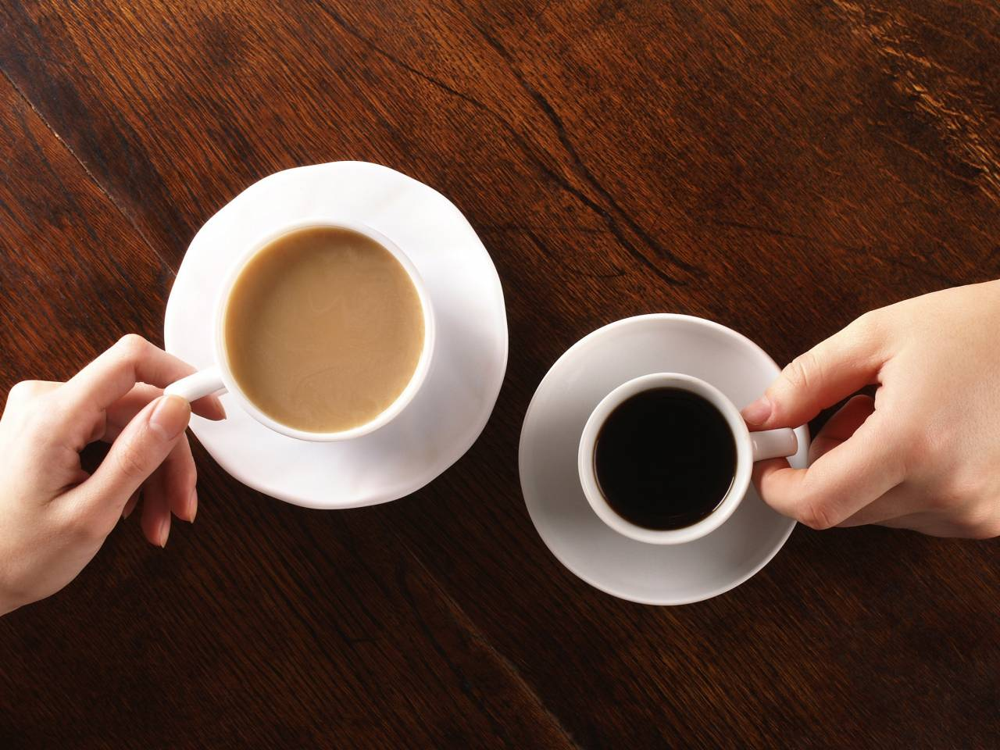

"If this is coffee, please bring me some tea; but if this is tea, please bring me some coffee" - Abraham Lincoln
Have you every thought much about the coffee or tea you choose to drink? What comes first to mind in making your choice, flavor, caffeine level, brand, or price? Have you ever thought of the health benefits or lack of? What if you could evaluate your choice of drink at the click of a button and know exactly what you were getting for your price, how valuable would that be? Well now you can! This projects examines the top ten coffee and tea brands on the market and provides you with an indepth look at each brand so you can make a better choice about your favorite beverage!
La Baristas introduces the Bold, the Strong, and the Bang! The purpose of this project is to provide users with an interactive website that provides detailed information about the coffee or tea of their choice at thier fingertips We show the quality of the top drink brands in a visual and interactive manner Here’s how: We will research the top name brand coffees and teas Scrape various website for the following parameters: Rank Harvest Location Manufacturing Process Health Claims Average Price Consumer Reviews Brewing Process Caffeine Level Next we deploy our data to a database: MongoDB And perform statistical calculations to determine various ratios We then display these results in visualizations that allow the user to change views and enter their own parameters for more detailed information. Knowing the different types of coffee species will give you a whole new appreciation for that great cup of coffee you always crave in the morning. If you’re expecting more from the coffee you drink, it might be because you particularly crave for a certain coffee species more than the others. In this week’s feature, we show you the different coffee species and their taste profiles. So when you have a certain taste expectation of coffee, you’ll already know which type of coffee to buy on your next trip to the market. COFFEE SPECIES There are actually around a hundred species of coffee, and experts state that there are species that haven’t been recorded yet. The following species are the ones grown commercially for drinking.